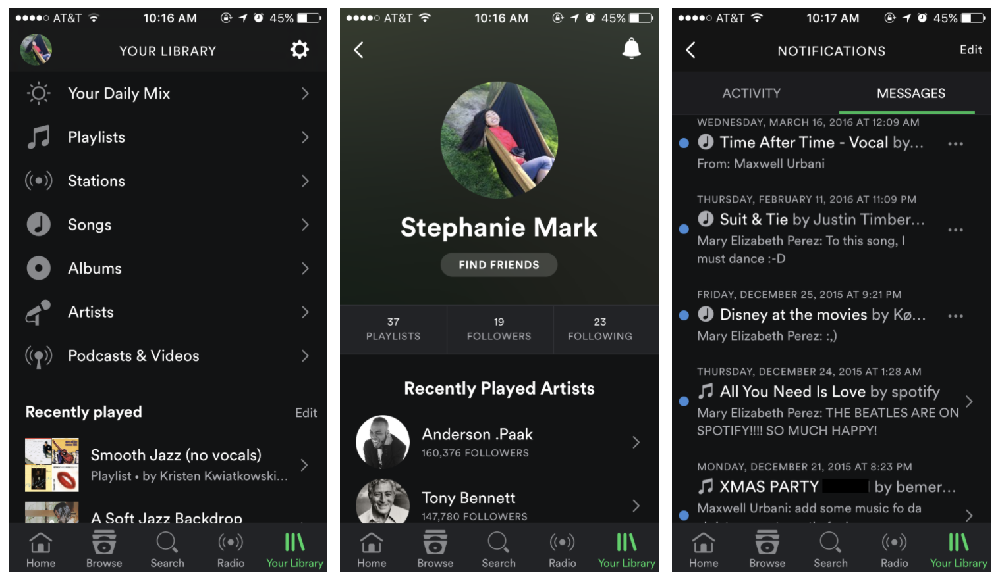
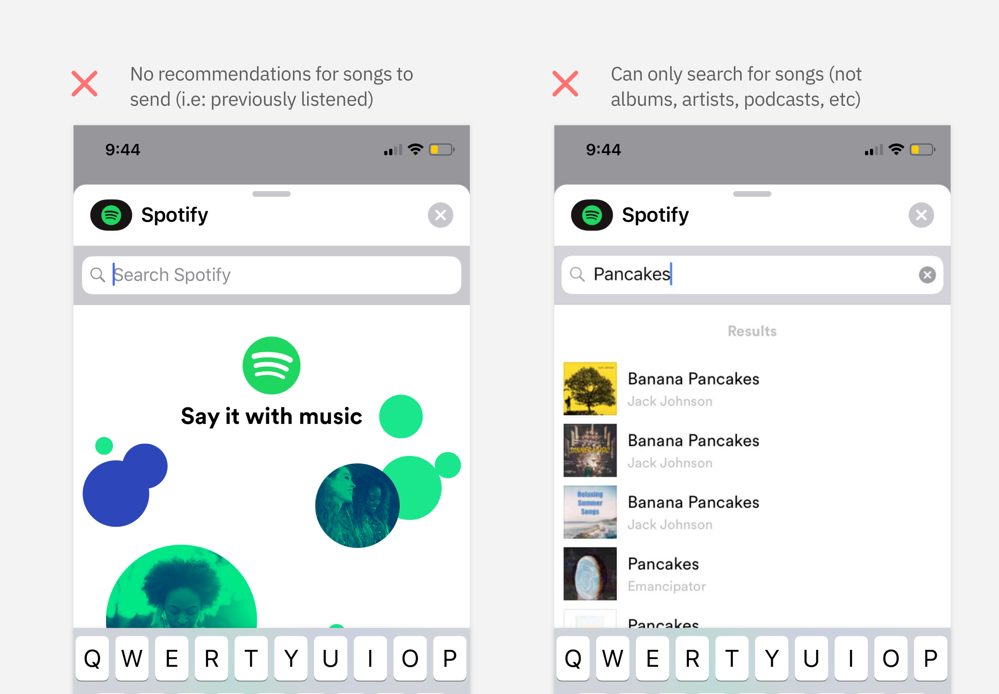
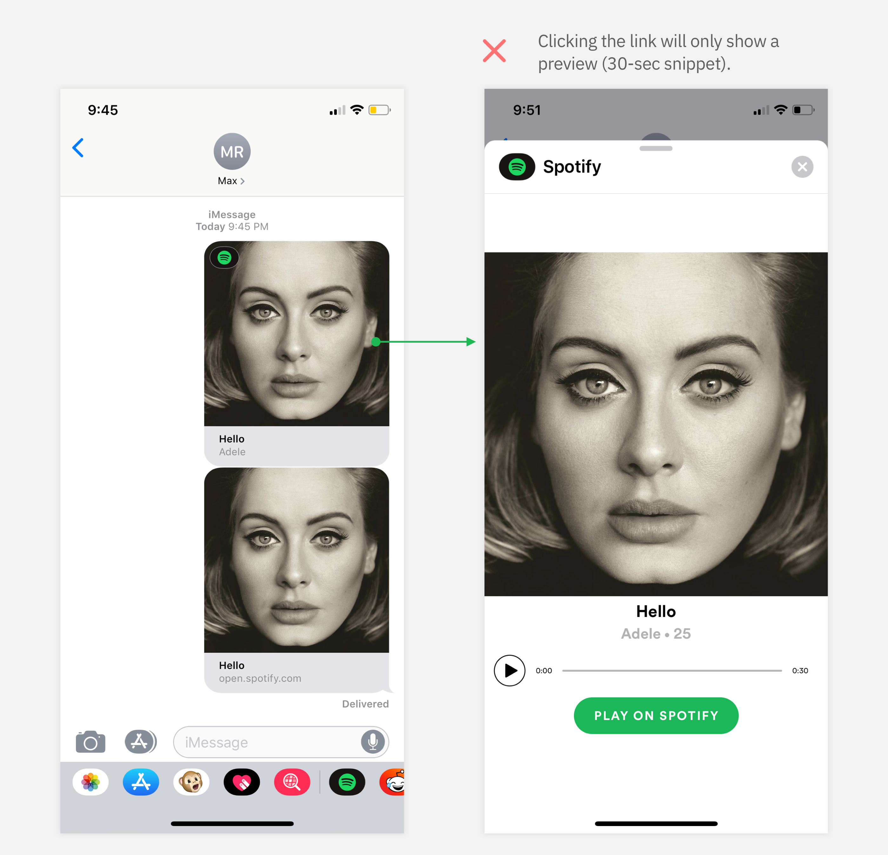
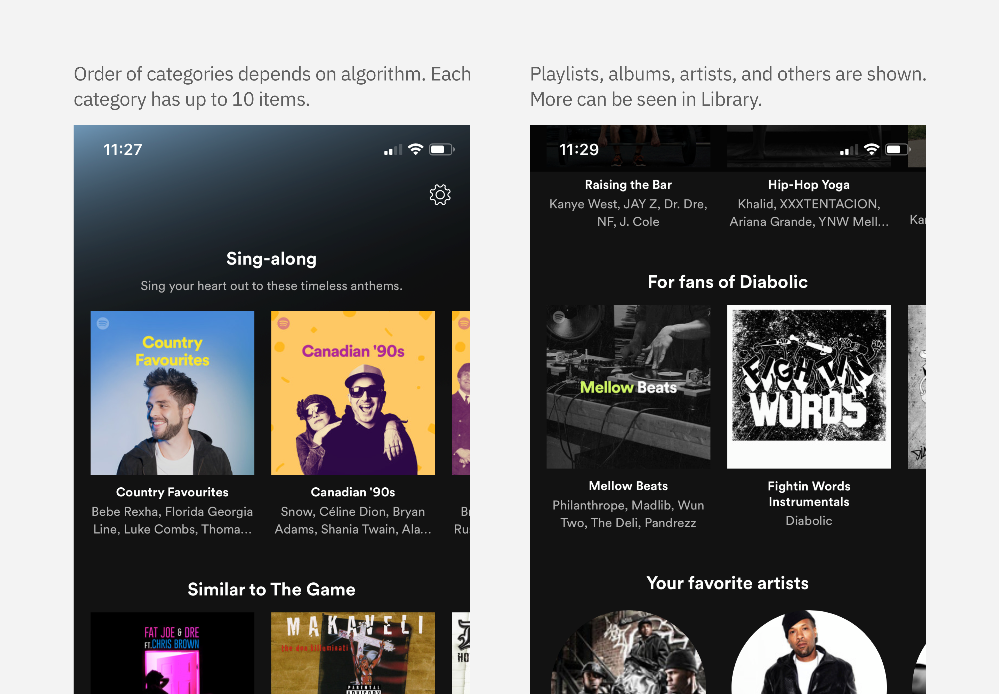

Redesigning the Sharing Process on Spotify
Side-Project
Role: Designer
Timeline: Feb - Mar 2019
Back in early 2019, I found myself on a roll, finding great music left, right and centre. As with
many people, I wanted to share what I found with friends that I knew had the same taste. It's during
this "spree" that I realized how annoying it was to share music on Spotify; constantly having to go
through iMessage, type in the name of one of my contacts, send it, and repeat this for however many
songs I was sending or people I was sending it to. I knew that there had to be a better way.
Although I wasn't working at Spotify, I wanted to see if I could solve this problem through a
side-project. As a result, I designed a prototype that would keep sharing
within the Spotify app, and store shared items in playlists/ lists for ease of access.
The Process
Spotify's Past Attempt at Sharing
While researching better ways of sharing, I came across the fact that Spotify used to include an in-app messaging feature. Users could send messages to each other and then access the music that was sent to them without exiting the app. I soon realized I was one of many that was surprised that this even existed, yet wasn't surprised that this feature was deprecated due to low-engagement.
Though many users praised the fact that it made sharing music quick and easy, and that it helped them
keep track of all the music that was shared to them, I found many complaints about Spotify's actual
implementation.
Users mentioned that due to the lack of notifications (when songs are received) and the feature being
buried in their settings, many didn't even realize this functionality existed. Other insight I got was
that some users had multiple group-chats in other apps (i.e: Facebook, WhatsApp), and questioned why
they'd need another dedicated inbox.
Though the benefits included sharing without leaving the app, and being able to easily keep track of
shared music, my findings led me to believe that in-app messaging wasn't the way to go. From here I
wondered,
how might Spotify keep the convenience of sharing in-app, without messaging, meanwhile still making
shared items more accessible to users to
improve engagement with this feature?
An Alternative Way of Sharing
Despite deprecating their in-app messaging feature, Spotify did include their own integration into iOS'
Messages app. Though not my primary focus, I decided to look into this to see if it addresses any of the
problems I
noticed with the original in-app messaging approach.
After forcing myself to use it,
my conclusion (and assumption) was that this method didn't follow a Spotify listener's mindset, and
actually fared worse when looking at convenience and saving songs; in the end, it didn't solve either of
the sharing or
receiving issues that I was going after.
Sharing
For sharing a song, the user is greeted with an empty search field, prompting them to remember whatever song they were listening to and search for it and send it. From a usability standpoint, users are left inconvenienced as they are limited to only choosing songs and aren't given "hints" such as previously played songs. Just to add on the psychological aspect (and my own experiences), I only want to share music to friends when I, myself, am listening to music. With the Messages integration, I would need to be messaging someone and take the time to locate the song by name, and then share it; this to me is unrealistic.
Receiving
On the receiving end, the user would see a link similar to that of the traditional sharing method, except with the Spotify logo on the top-left. Upon clicking it, rather than being taken to the app, they are shown a preview of the song with a 30-second snippet. This adds another barrier to the receiving end of having to click again to access the full song.
Understanding the Current Sharing Problem
Knowing the backstory of sharing on Spotify, I wanted to move forward and further explore what
sharing is now; I did this by speaking to a few friends that I knew were frequent users of Spotify.
With these informal interviews, my main goal was to find out how they felt about sharing outside of
Spotify, and whether it was any better than in-app.
Long-story short, it was not better.
My findings basically fell into 3 groups, being around sharing, receiving and comparisons to other
apps.
With sharing from the Spotify app, the consensus seemed to be that the process was too long. Users mentioned that they would need to go through multiple menus just to find the sharing screen, and then would have to leave the app and send the song (the same issue I was facing initially). With the flow-chart below, the bulk of the steps for sharing come from interacting with an external app.

With receiving, however,
the biggest problem was losing track of the music. This is where I noticed a "step-back" from the
original in-app messaging implementation, as users could previously save music that was sent to them,
and always be able to see their tracks. Now, with various messaging platforms, users are left with
locating each song individually, saving them, all while hopping back & forth between apps.
Interestingly enough, although the interviewees included iOS users, no one had explicitly mentioned
using the Messages integration. From here, I decided to narrow my focus on sharing in-app.
Who's Doing Sharing Right?
Now, amidst the above issues, a few users that I interviewed mentioned sharing on Instagram and YouTube
were great. Although I knew that they took an in-app messaging approach, I used this opportunity to look
at how they designed their sharing screens.
Instagram had a quick method of sharing content to followers by having the button visible on all posts.
In addition, it is easy to send content to multiple people, unlike Spotify (a frequent problem of mine).
I found YouTube's sharing screen to be similar, however, I found it cumbersome to have a carousel scroll
to search through a list of friends/subscribers. One thing it did have, was an easy access to external
apps, something that I noticed was an extra step in Instagram. As I knew that the main problem was with
the length of the sharing process, I wondered if I could combine these methods of sharing, to eliminate
the step of having to click to show external apps.
What Can I Do About Receiving?
Although sharing seemed quite simple, I wondered how receiving could be done on Spotify knowing that messaging at this point was a disproven idea. As my challenge was "... meanwhile making shared items more accessible to users...", I looked at the homescreen as to me, this was the most accessible screen there was. From here I ideated, how might I allow users to see their shared items from the homescreen?
Sketching Some Ideas
I knew that a bulk of my effort would go towards how songs would be received, so I focused on that
first.
I started sketching, and first came up with a queue that would store shared songs. Basically a user
would have this central queue, accessible from the homescreen, that would pile up with songs whenever
someone shared music to them. My second idea was a playlist that would
house songs and lists that would store other content. These lists and playlists would then show up on
the homescreen as a category, working with the algorithm.
I ended up going with this playlist design, as
I found it to be more robust in handling shared content that was not a single song (i.e: artists,
playlists, podcasts, etc), a problem that I didn't want to face due to Spotify's integration within
iMessage.
For the sharing aspect, I went with my previous thoughts of taking inspiration from both Instagram and YouTube. I didn't want to change how users used Spotify completely, so I decided to keep sharing where it was, but change the resulting screen.

High-Fidelity Prototypes
Continuing with my second design above, I iterated once more through paper and moved onto Sketch. Both
the sharing and receiving processes are shown below, contrasted to the current process. The full
prototype can be accessed here.
Sharing Screens
Clicking the share button will allow the user to select from a list of only their Spotify followers (to avoid users following others and sending unsolicited items). Users can still easily choose from a list of external applications to maintain the length of the existing process.
Receiving Screens
Aiming at the problem of accessibility and being able to track shared content, items would be found on
the homescreen. Ideally, with the help of Spotify's algorithm, newly shared content will push the
categories to the top to be in-view, without scrolling. All shared content can be accessed from the
Library, similar to other content on Spotify. Items that
aren't songs/singles, will be shown in lists (shown as an example with playlists).
When designing this, I wanted to reduce any additional learning that a user would have to do, and work
with what Spotify already had.
What I Learned from this Side-Project
My main takeaway is to always check if the problem I'm solving for has had failed attempts to avoid
going down the same path. Clearly, Spotify has made efforts in trying to make a better sharing
experience for all users; unfortunately, I wasn't one of them.
Although my solution may not be perfect, I hope it's a step in the right direction of using existing
components and functionality to solve the problem. I would assume that it might reduce the costs of
keeping additional servers running, opposite the case of an inbox feature, and it would make use of the
algorithm on the homescreen to promote the shared content.
Honestly, in the end, I saw the benefit in working with a team as being on my own can really hinder the
amount of
ideas I can come up with. Doing this research got my mind into tunnel-vision, and I felt myself
narrowing on just these 2 ideas of a queue and categories.